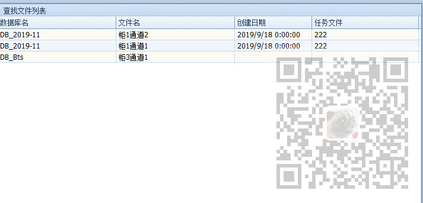

原文出处:本文由博客园博主霸道流氓提供。
原文连接:https://www.cnblogs.com/badaoliumangqizhi/p/12065791.html
原文连接:https://www.cnblogs.com/badaoliumangqizhi/p/12065791.html
场景
Winform控件-DevExpress18下载安装注册以及在VS中使用：
https://blog.csdn.net/BADAO_LIUMANG_QIZHI/article/details/100061243
在上面搭建好DevExpress的环境后，要使用其GridControl控件。
注：
博客主页：
https://blog.csdn.net/badao_liumang_qizhi
关注公众号
霸道的程序猿
获取编程相关电子书、教程推送与免费下载
实现
首先在窗体中拖拽一个GridControl
然后在窗体的Load时事件中对其进行添加列和样式设置
private void FrmSearch_Load(object sender, EventArgs e)
{
//设置GridControl样式
Common.GridControl.GridControlHelper.SetStyles(this.gridControl1.MainView as DevExpress.XtraGrid.Views.Base.ColumnView);
//订阅行点击事件
this.gridView1.RowClick += gridView1_RowClick;
}
进入设置样式的方法
public static void SetStyles(DevExpress.XtraGrid.Views.Base.ColumnView view)
{
if (view is DevExpress.XtraGrid.Views.Grid.GridView)
{
DevExpress.XtraGrid.Views.Grid.GridView gridView = view as DevExpress.XtraGrid.Views.Grid.GridView;
gridView.OptionsView.ShowGroupPanel = false; //隐藏最上面的GroupPanel
gridView.OptionsView.ShowIndicator = false; //隐藏指示列
gridView.FocusRectStyle = DevExpress.XtraGrid.Views.Grid.DrawFocusRectStyle.None; //设置焦点框为整行
gridView.OptionsSelection.EnableAppearanceFocusedCell = false; //禁用单元格焦点
gridView.OptionsSelection.EnableAppearanceFocusedRow = true; //启用整行焦点
gridView.OptionsSelection.EnableAppearanceFocusedRow = true; //启用整行焦点
gridView.OptionsSelection.EnableAppearanceHideSelection = false;
gridView.OptionsView.EnableAppearanceEvenRow = true; //启用偶数行背景色
gridView.OptionsView.EnableAppearanceOddRow = true; //启用奇数行背景色
//gridView.Appearance.EvenRow.BackColor = System.Drawing.Color.FromArgb(150, 237, 243, 254); //设置偶数行背景色
//gridView.Appearance.OddRow.BackColor = System.Drawing.Color.FromArgb(150, 199, 237, 204); //设置奇数行背景色
//gridView.Appearance.FocusedRow.BackColor = System.Drawing.Color.Red;
//gridView.Appearance.SelectedRow.BackColor = System.Drawing.Color.Red;
}
//禁用自动生成列
view.OptionsBehavior.AutoPopulateColumns = false;
//禁用自动列宽
if (view is DevExpress.XtraGrid.Views.Grid.GridView)
{
(view as DevExpress.XtraGrid.Views.Grid.GridView).OptionsView.ColumnAutoWidth = false;
}
//禁用数据过滤面板
view.OptionsView.ShowFilterPanelMode = DevExpress.XtraGrid.Views.Base.ShowFilterPanelMode.Never;
#region 添加列
view.Columns.Clear();
int index = 0;
DevExpress.XtraGrid.Columns.GridColumn col = null;
col = new DevExpress.XtraGrid.Columns.GridColumn();
col.FieldName = "DBName";
col.Caption = "数据库名";
col.Width = 200;
col.VisibleIndex = index++;
view.Columns.Add(col);
col = new DevExpress.XtraGrid.Columns.GridColumn();
col.FieldName = "ShortNodeText";
col.Caption = "文件名";
col.Width = 200;
col.VisibleIndex = index++;
view.Columns.Add(col);
col = new DevExpress.XtraGrid.Columns.GridColumn();
col.FieldName = "CreateDate";
col.Caption = "创建日期";
col.Width = 130;
col.VisibleIndex = index++;
view.Columns.Add(col);
col = new DevExpress.XtraGrid.Columns.GridColumn();
col.FieldName = "TaskFile";
col.Caption = "任务文件";
col.Width = 180;
col.VisibleIndex = index++;
view.Columns.Add(col);
col = new DevExpress.XtraGrid.Columns.GridColumn();
col.FieldName = "FullPath";
col.Caption = "完整路径";
col.Width = 180;
col.VisibleIndex = index++;
view.Columns.Add(col);
col = new DevExpress.XtraGrid.Columns.GridColumn();
col.FieldName = "Barcode";
col.Caption = "电池条码";
col.Width = 180;
col.VisibleIndex = index++;
view.Columns.Add(col);
#endregion
SetAllowEdit(view, false); //禁用编辑
SetAllowSort(view, DevExpress.Utils.DefaultBoolean.False); //禁用排序
SetAllowFilter(view, false); //禁用数据过滤
}
在上面方法中进行样式的设置以及列的添加
注意在添加列时FieldName 属性要与将来设置数据源时的字段一致。
然后上面的禁用编辑的方法
public static void SetAllowEdit(DevExpress.XtraGrid.Views.Base.ColumnView view, bool isAllow)
{
foreach (DevExpress.XtraGrid.Columns.GridColumn col in view.Columns)
{
col.OptionsColumn.AllowEdit = isAllow;
}
}
禁用排序的方法
public static void SetAllowSort(DevExpress.XtraGrid.Views.Base.ColumnView view, DevExpress.Utils.DefaultBoolean value)
{
foreach (DevExpress.XtraGrid.Columns.GridColumn col in view.Columns)
{
col.OptionsColumn.AllowSort = value;
}
}
禁用数据过滤的方法
public static void SetAllowFilter(DevExpress.XtraGrid.Views.Base.ColumnView view, bool isAllow)
{
foreach (DevExpress.XtraGrid.Columns.GridColumn col in view.Columns)
{
col.OptionsFilter.AllowAutoFilter = isAllow;
col.OptionsFilter.AllowFilter = isAllow;
}
}
初始化完样式和添加列后就要设置数据源
首先新建一个实体对象，对象要有与上面添加列时FieldName 所对应的属性。
下面是部门字段和属性，其他省略
public class DataTreeNode
{
private string id;
private string parentId;
private string nodeText;
private string createDate;
private string fullPath;
private string taskFile;
private string barcode;
private DataTreeNodeTypes nodeType = DataTreeNodeTypes.Folder;
/// <summary>
/// 去掉扩展名的数据文件完整路径
/// </summary>
public string Id
{
get { return id; }
set { id = value; }
}
/// <summary>
/// 父级节点的Id
/// </summary>
public string ParentId
{
get { return parentId; }
set { parentId = value; }
}
/// <summary>
/// 数据文件名称
/// </summary>
public string NodeText
{
get { return nodeText; }
set { nodeText = value; }
}
}
构建数据源
List<DataTreeNode> data = new List<DataTreeNode>();
data = DataTreeListHelper.ParseDir(Common.Global.AppConfig.TestDataDir, data);
var result = data.Where(p => p.NodeType = = DataTreeNodeTypes.File);
首先声明上面实体对象的List，然后使用ParseDir方法将文件目录进行递归查询。
然后进行筛选出文件类型。
然后可以直接设置数据源
this.gridControl1.DataSource = result;